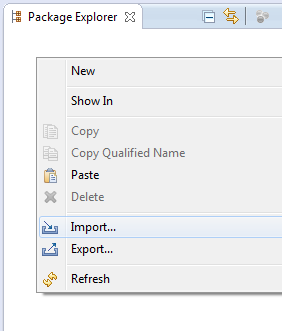
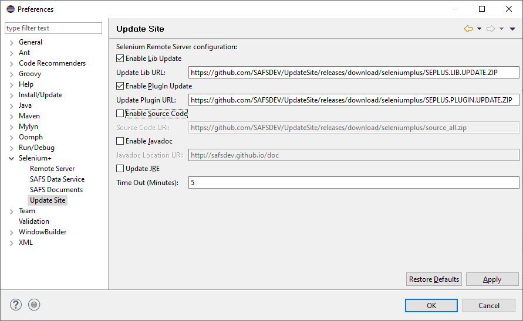

Intro to SeleniumPlus
Updated: 2015.09.30
SeleniumPlus Welcome
Thanks for giving SeleniumPlus a try!
Select any of the links above to go directly to an area of interest.
We welcome any feedback (both good and bad) that can help us make the test automation experience better!
The SAFS/SeleniumPlus Development Team
Carl Nagle
Dharmesh Patel
Lei Wang
Tao Xie
Try a SAMPLE Project
Create the Sample Project
- Right-click in the Package Explorer view.
- Select "New->Project..." in the popup menu.
- Select "Selenium+ ->Selenium+ Sample Project" in the New Project dialog and click "Next".
- Make sure "Use default location" is selected and click "Finish" in the dialog.
- If prompted to Associate the project with the Selenium+ perspective select the "Remember my decision" CheckBox and click "Yes".

- The SAMPLE project should now be installed for your review and experimentation.

Review the Sample Project
The SAMPLE project shows one desirable way to put together a suite of tests.
- The root SAMPLE folder will contain the project's "test.ini" configuration file.
- The TestCases package can hold one or more classes of simple testcase actions as shown in the TestCase1.java class.
- The TestRuns package can hold one or more classes that piece together test suites that run testcases in any desired sequence as shown in the TestRun1.java class.
- The Actuals folder may receive captured runtime files, data, or images.
- The Benchmark folder will contain benchmark files, data, or images when required.
- The Diffs folder may receive runtime compare differences in files, data, or images.
- The Logs folder will receive test log(s) at the end of a test.
- The Maps folder will contain tester-defined App Map files and the AppMap.order file used during testing.
Run the Sample Project
- In the Package Explorer, select "SAMPLE->Tests->sample.testruns->TestRun1.java"
- In the main menu, select "Run->Run As->Selenium+ Test".
(The test should automatically start and run with Google in Firefox.)
- When the test completes, Package Explorer should show a "TestRun1.txt" file in the "SAMPLE->Logs" folder.
(You may have to hit Refresh(F5) for the Package Explorer to update.)
- Double-click "TestRun1.txt" or right-click it to "Open With...->Text Editor" to see the test results.
Create and Review a New Project
Create a New Project
- Right-click in the Package Explorer view.
- Select "New->Project..." in the popup menu.
- Select "Selenium+ ->Selenium+ Project" in the New Project dialog and click "Next".
- Enter a name for the project and click "Finish" in the dialog.
- If prompted to Associate the project with the Selenium+ perspective,
select the "Remember my decision" CheckBox and click "Yes".
- The new project should now be created for your review and experimentation.
Review the New Project
The new project provides a way to put together a suite of tests.
- The root project folder will contain the project's "test.ini" configuration file.
- The TestCases package can hold one or more classes of simple testcase actions.
An empty TestCase1.java class is initially provided.
- The TestRuns package can hold one or more classes that piece together test suites that run testcases in any desired sequence.
An empty TestRun1.java class is initially provided.
- The Actuals folder may receive captured runtime files, data, or images.
- The Benchmark folder will contain benchmark files, data, or images when required.
- The Diffs folder may receive runtime compare differences in files, data, or images.
- The Logs folder will receive test log(s) at the end of a test.
- The Maps folder will contain tester-defined App Map files and the AppMap.order file used during testing.
Import Existing Projects
SeleniumPlus Projects, like the SAMPLE project, are intended to be portable for other users and machines with SeleniumPlus installed. The entire Project should be saved--whether to CVS, GIT, or some othe storage medium. Although the "bin" subdirectory for the Project is generally not stored since these are compiled assets.
For example, to Import a Project that has been copied or saved to the local file system:
- Select "File->Import..." from the Eclipse main menu,
- Select "General->Existing Projects into Workspace" in the Import dialog and press "Next",
- Press "Browse" on the "Select root directory:" item in the Import dialog and,
Locate and select the root directory containing the Project folder in the local file system.
The directory name should be the same name of the Project.
- Press "OK" to confirm your folder selection.
- Press "Finish" to complete the Import of the Project.
Note: Eclipse will NOT let you have/import two projects with the same name.
Importing older SeleniumPlus projects may require you to "fix" some of the paths in that Project's Java Build Path configuration and in each test configuration INI file (Test.INI) used for testing.
Newer SeleniumPlus projects have been created with the information that follows so they are already portable to different machines. For these newer projects you should not have to "fix" anything.
Evaluating/Fixing Imported Projects
The latest versions of SeleniumPlus now support 2 features to maximize (or fix) Project portability:
- SELENIUMPLUS_HOME: Java Build Path Classpath Variable.
- %SELENIUM_PLUS%: Test.INI [SAFS_DRIVER] DriverRoot.
For more detailed information on each:
- 1. SELENIUMPLUS_HOME: Java Build Path Classpath Variable.
- Automatically created by the latest version of the SeleniumPlus PlugIn.
Defines the path to the SeleniumPlus install directory. The value should be the same as the System's Environment Variable: %SELENIUM_PLUS%.
The setting can be found in the Eclipse main menu under:
Window->Preferences->Java->Build Path->Classpath Variables
New Projects created with the latest PlugIn will now automatically use this SELENIUMPLUS_HOME Classpath Variable for the Project's Java Build Paths. You can see the Project's Java Build Paths by:
- Right-Click on the Project in the Package Explorer,
- Select "Build Path->Configure Build Path.." in the popup menu,
- Select "Java Build Path" in the Properties Dialog for the project,
- Select the "Libraries" tab in the Java Build Path panel of the dialog.
Currently, you should see settings using SELENIUMPLUS_HOME like:
Java Build Path entries:
SELENIUMPLUS_HOME/libs/JSTAFEmbedded.jar
SELENIUMPLUS_HOME/libs/selenium-server-standalone-2.44.0.jar
SELENIUMPLUS_HOME/libs/seleniumplus.jar
Fixing the Java Build Path for Portability
If your existing projects instead have explicit hardcoded paths to these files then they are less portable.
The machine importing your project may have SeleniumPlus installed in a different location.
To fix such a portability issue, you can replace the explicit hardcoded library paths with new ones referencing and extending the SELENIUMPLUS_HOME Classpath Variable. You can do this by:
- Note the explicit hardcoded path for each listed JAR file coming from the SeleniumPlus /libs/ directory,
- Select "Add Variable" in the Java Build Path dialog,
- Select the "SELENIUMPLUS_HOME" Variable and then press "Extend...",
- Select the appropriate JAR file in the "libs" directory in the Variable Extension dialog,
- Press "OK" and the new Java Build Path entry like those above should now be present,
- Select the older explicit hardcoded path entry you just replaced and select "Remove" to delete it from the list.
- Do this until all old explicit hardcoded path entries to SeleniumPlus JAR files have been properly replaced.
- 2. %SELENIUM_PLUS%: Test.INI [SAFS_DRIVER] DriverRoot.
- Automatically created by the latest version of the SeleniumPlus PlugIn, Nov 18, 2014 or later.
Defines the path to the SeleniumPlus install directory by retrieving it from the System Environment variable of the same name. The value is used in the DriverRoot setting of the Test.INI file to dynamically get the path to SeleniumPlus--which might be different on different systems.
NOTE: This setting will only work on SAFS or SeleniumPlus with installed or updated JARs dating Nov 18, 2014 or later.
The JAR files in question are:
| SAFS: | /lib/safsselenium.jar
|
| SeleniumPlus: | /libs/seleniumplus.jar
|
The portability setting can be found in the Test.INI as:
[SAFS_DRIVER]
DriverRoot="%SELENIUM_PLUS%\extra\automation"
Fixing the Test.INI file for Portability
If your existing projects instead have explicit hardcoded paths for this setting then they are less portable.
The machine importing your project may have SeleniumPlus installed in a different location.
To fix such a portability issue, you can replace the explicit hardcoded DriverRoot path in the Test.INI with the same setting as shown above.
App Maps provide a critical single point of maintenance
for important data and component recognition used throughout your tests.
Create new App Map file
Right click on Maps folder of the project, click "Selenium+->Create Map" to create new App Map file.
A new App Map will be created with .map extension. User can create multiple map files to separate language-specific component recognition strings and/or test configuration data.
Examples:
ProjectApp_en.map
ProjectApp_fr.map
ProjectApp_es-CO.map
ProjectApp_W7.map
ProjectApp_W8.map
The AppMap.order File
In general, there is a "primary" ProjectApp.map file which holds the bulk of all recognition strings and Application Constants. Then, there can be one or more App Map files containing language-specific values used by or overriding the primary App Map values.
The AppMap.order file is a means to chain multiple App Maps to be loaded in a specific order.
Example:
;
; Order App Maps Last In First Out (LIFO) for "chaining"
;
App.map
App_fr.map
The App Map Details
Review: App Map Format Info
Normally, an App Map contains multiple "sections". One of these is [ApplicationConstants] and the remaining user-defined sections are used to define "windows" or "containers" of components.
ApplicationConstants stores all test constants and data.
;
; Constants and other data.
;
[ApplicationConstants]
nlsSearch="Search"
url="http://www.google.com"
username="anonymous"
password="newpassword"
Window or Container sections hold recognition strings used to identify child components within those containers.
In a container section, the item with the same name as the container is optional.
Example:
Google="id=viewport" is optional,
See the [Login] section? There is no "Login" item in that section. The default will be assumed (See the Note below.)
;
; Component recognition:
;
; Google main page window/component recognition
;
[Google]
Google="id=viewport"
Apps="title=Apps"
Search="text={^nlsSearch}"
;
; Google's Login window/component recognition
;
[Login]
UserName="name=Email"
Password="name=Passwd"
SignIn="id=signIn"
Note:
The item with the same name as the container (ex. "Google" and "Login"), if present, MUST contain a recognition string that *will* find the parent container of the contained children. When searching for a child, the parent is sought first.
If the parent is not found, then the search for the child will NOT occur.
If the item with the same name as the container is NOT provided, the default container to search is assumed to be the topmost document of the webpage, or the topmost document in any frame or iframe that was last searched.
Component Recognition Strings or Object Locators
There are many ways to create component "recognition strings"(RS).
The RS must be unique for the page, or unique for the specific parent container, if that was provided.
Specify a FRAME RS for the parent container, if frames are in-use:
FRAMEID=my_content_frame_id
FRAMENAME=my_content_frame_name
FRAMEXPATH=//iframe[@id='frameId']
FRAMEINDEX=N (1=first frame) RS by Index is not recommended.
(note: parent/child hierarchy is separated by ";\;" )
(note: If there is no frame-expression in a RS, the last visited frame
will be searched to find child components.
By default, the last viisited frame is the main frame.
And that is why if we specify a frame container, the children
do not need to specify the parent frame in their RS.
For example:
[HelpPopup]
HelpPopup="FRAMEID=VisualAnalyticsHubLogon_iframe"
BtnHelpCenter="id=__item23"
BtnHelpCenter is expected to be found in frame 'VisualAnalyticsHubLogon_iframe')
For child components, use supported type, property and attribute qualifiers, as necessary:
:PASM: (Property Attribute Search Mode -- Must be first, if present. See Notes.)
TYPE="DOJO"|"SAP"; (See Notes.)
ID=id;
CLASS=class;
NAME=name;
TEXT=text;
TITLE=title;
LINK=linkInfo;
PARTIALLINK=partialLinkInfo;
TAG=tagname;
INDEX=n; (1-based, NOT used alone, indicates the Nth matching item.)
ITEMINDEX=n; (1-based, NOT used alone, indicates the Nth matching list item.)
PATH=parent->child->grandchild; (NOT used alone. Path to a subitem in a List, ComboBox, Menu, Tree)
PROPERTY=propname:propvalue; (can be used with others to provide more uniqueness)
PROPERTYCONTAINS=propname:partialValue; (can be used with others to provide more uniqueness)
Notes:
Multiple qualifiers should be separated by semi-colons (";").
TYPE= is experimental and only supports "DOJO" and "SAP" at this time. Do not use.
:PASM: if used, means everything that follows is explicitly property=value pairs.
No PASM: Example 1:
MyObject="Text=Some Text;enabled=true;ItemIndex=2;"
"TEXT" and "ITEMINDEX" are known qualifiers--not property names,
while "enabled"--which is NOT a known qualifier--will be treated
as a native object property/attribute to match.
PASM: Example 2:
MyObject=":PASM:text=Some Text;enabled=true;itemindex=2;"
With ":PASM:" leading; "text", "enabled", and "itemindex" are all sought as native object
property/attribute values that must be matched.
Identify child elements by multiple native properties or attributes:
MyObject="aproperty=xxx;someattribute=yyy;anotherone=zzz"
You don't need :PASM: if none of the properties or attributes have the same
names as our qualifiers above.
Identify child objects using explicit XPATH or CSS RS:
MyObject="XPATH=.//div[contains(text(),'foo')]"
MyObject="CSS=div:contains('foo')"
Capture Recognition Strings - Browser Tools
Generally, the 3 major browsers seem to support the same or similar mechanism for inspecting web page elements.
- Navigate to the desired application in the browser.
- Press "F12" to display the browser Object Inspector.
If "F12" does not do it then try Ctrl+Shift+C or Ctrl+Shift+I or
consult your browser documentation for launching the Inspector.
- Click the Inspector tool and then Click the desired application component.
FireFox:

Chrome:

IExplore:

- The Inspector panels should now show detailed information about the selected application component highlighted in the console.
- If present, click the Inspector's "Attributes" tab (or equivalent) to see attributes (name="value" properties) for the component.
- Common attributes to use for recognition are: name, type, id, title, value, and text.
- 'text' is not a real 'attribute', but we support it as such.
- Whenever using visible (and localizable) text as part of the recognition string, be sure to parameterize the recognition string in the App Map as discussed in the Test Design Guidelines.
- Identify one or more attributes that together uniquely identify the component.
- Multiple attributes can be used in the AppMap recognition string when separated by a semi-colon:
Format:
ComponentName="<recognition>"
- OK="id=btnK"
- OK="id=btnK;class=btn;name=OK"
A Primary App Map hypothetically for Google (App.map):
;
; Constants and other data.
;
[ApplicationConstants]
nlsSearch="Search"
;
; Main Google window/component recognition
;
[Google]
Google="id=viewport"
Apps="title=Apps"
Search="text={^nlsSearch}"
;
; Google's Login window/compoent recognition
;
[Login]
Login="id=viewport"
UserName="name=Email"
Password="name=Passwd"
SignIn="id=signIn"
A French App Map to override the "Search" text in the Primary App Map (App_fr.map):
;
; Constants and other data.
;
[ApplicationConstants]
nlsSearch="Recherche"
Capture Recognition Strings - Selenium ProcessContainer
There is a SeleniumPlus ProcessContainer tool that can be used to interactively capture,
modify, and test recognition strings natively using the SAFS/Selenium engine with the Selenium WebDriver.
This can be used instead of--or in addition to--the Browser Tools mentioned above.

Review the SeleniumPlus ProcessContainer doc for more complete usage notes.
In particular, note that Selenium and SeleniumPlus only seek components ("Find Element") in the currently identified Frame or iFrame, if frames exist. If you get "No Such Element" or "...not found." for a particular Recognition: string you believe is good, it may be we are looking in the wrong Frame.
So, when attempting "Find Element" with ProcessContainer, you must do one of the following:
SAFS Expressions
A fundamental overview of SAFS Expression Processing.
Historically, expression processing happens on every "field" for every action or command in a SAFS "inputrecord". The JSAFS Java code that SeleniumPlus is based upon retained that functionality.
Expression processing is "ON" by default.
That is, for any String argument or parameter passed to a SeleniumPlus class "action" or "command" there will be an attempt to process that String argument for possible expressions. (Note, that calls to other libaries that are NOT in the SeleniumPlus class--like WDLibrary, SearchObject, or WebDriver--do NOT have arguments processed for expressions.)
If the action/command String argument is
NOT enclosed in double-quotes, and
DOES contain expression operators,
THEN it will get processed and changed accordingly.
Operators that trigger String changes in action/command arguments:
^ '(Caret) Variable Prefix
= 'Assignment operator
" 'A single Double-Quote mark
& 'String concatenate operator
+ 'Addition operator
- 'Subtraction operator
* 'Multiplication operator
/ 'Division operator
% 'Modulus/Remainder operator
( 'Open Group operator
) 'Close Group operator
We have found that most SeleniumPlus users DO NOT need or want Expression processing enabled for the majority of their "action" or "comand" calls. Until an easy "fix" is available that does not break tests for existing JSAFS and SeleniumPlus users there are two options for controlling this:
- Enclose these String arguments in double-quotes.
There is a (somewhat) convenient quote() method available in your TestCase or TestRun for doing this.
Example:
Click(Map.Content.Canvas, quote("15,-20"));
Because the (-) subtraction operator exists in the string we have to quote() it to avoid expression processing.
- Alternatively/As needed--or at the very beginning of all your tests--disable Expressions:
This should make enclosing these String arguments with quote() unnecessary.
Example:
Misc.Expressions(false);
...
Click(Map.Content.Canvas, "15,-20");
Because Expressions are OFF, the (-) subtraction operator should not trigger expression processing and the argument should not need to be quoted.
Adding and Editing Tests
Adding TestCase Classes
- In the Package Explorer,
right-click on the TestCases package folder in your Project and select "Selenium+ ->Create Test File" in the popup menu.
- Enter a unique Test Class name (Ex: "Login") for the new class and click OK.
- A new TestCase class (Ex: "Login.java") should now exist in the TestCases package folder.
Adding TestCase Methods
- Make sure the target TestCase class is open for editing in the main content view of Eclipse.
- Click inside the TestCase class file on the line where you wish to insert the new testcase method.
(Do NOT insert it in the ignored runTest() method of the the TestCase class!)
- Right-click on the insertion line and select "Selenium+ ->Insert Test".
- A new test method is inserted ("Test01" by default).
- Rename the method as desired. (Ex: EnterUserID() instead of Test01())
Referencing AppMap Constants
- There is a Map class that provides access to the ApplicationConstants stored in your AppMaps.
- Sample AppMap ApplicationConstants entry:
;
; Constants and other data.
;
[ApplicationConstants]
GoogleURL="http://www.google.com"
- To reference the NAME of the GoogleURL variable (not the value):
- To reference the VALUE of the GoogleURL variable (not the name):
- Note: The value of a given item is retrieved at runtime via GetVariableValue calls.
- It is possible for a test to alter the value of these "constants" at runtime.
- Thus, at runtime, the value might NOT be the value as originally stored in the AppMap.
Calling SeleniumPlus Actions and Commands
- To see a list of ALL available SeleniumPlus Actions and Commands:
- Place the edit cursor where you wish to insert the call in your TestCase method.
- Type "SeleniumPlus." (the dot is explicitly needed to show the list.)
- A list of commands and subclasses of commands will display.
- Single-click an item in the list to get detailed help and information.
- Click inside the displayed help to scroll and view all available information.
- Double-click the item in the list to insert the call into your code.
- If selecting a subclass of commands (ComboBox, EditBox, Files, etc..),
you will need to press the dot (.) again to see and select from the list of commands provided by the subclass.
Example: "SeleniumPlus.EditBox." to show the list of EditBox commands.
(Note: Once you are familiar with the commands and subclasses, you don't have to type the "SeleniumPlus." prefix.
You can just type the command name or subclass name directly.)
- Provide the needed values or variables to any parameters needed by the command.
- Remember, every program statement must end with a semi-colon.
- To see a list of only the immediate SeleniumPlus Actions and Commands:
- Place the edit cursor where you wish to insert the call.
- Hold down the Ctrl key and press SPACE.
- A list of commands and subclasses of commands will display.
- Single-click an item in the list to get detailed help and information.
- Click inside the displayed help to be able to scroll or view all information.
- Double-click the item in the list to insert the call into your code.
- Provide the needed values or variables to any parameters needed by the command.
- Remember, every program statement must end with a semi-colon.
Adding TestRun Classes
- In the Package Explorer,
right-click on the TestRuns package folder in your Project and select "Selenium+ ->Create Test File" in the popup menu.
- Enter a unique Test Class name (Ex: "SmokeTest") for the new class and click OK.
- A new TestRun class (Ex: "SmokeTest.java") should now exist in the TestRuns package folder.
(Note: TestRun class calls many TestCase's methods, like main file)
Calling TestCases from your TestRun classes
-
- To see a list of ALL methods in a given TestCase class:
- Place the edit cursor where you wish to insert the TestCase call in your TestRun runTest() method.
- Type "<testcaseclass>." (the dot is explicitly needed to show the list.)
Ex: "TestCase1."
- A list of testcases (methods) of the TestCase1 class will display.
- Single-click an item in the list to get detailed help and information.
- Click inside the displayed help to scroll and view all available information.
- Double-click the item in the list to insert the call into your runTest() method.
- Provide the needed values or variables to any parameters needed by the command.
- Remember, every program statement must end with a semi-colon.
Automatic Configuration
Classes in your "current" project will automatically receive RuntimeDataAware-ness at Runtime (i.e. when the test is run.) These classes will receive required object instances at runtime for doing things like retrieving values out of the runtime App Maps.
You normally don't have to think or worry about this because it happens for you behind the scenes every time you run a test. If you only use classes in your current Project, and don't reference Maps or Utility classes from other SeleniumPlus projects, then you can stop reading this and explore other sections of the Intro.
However, if you DO reference "other" SeleniumPlus projects in your current project--like an external "helper" project--or other projects that have runtime functionality you want to share and NOT duplicate--then you do need to consider the following.
Classes in those "other" projects that are not the "current" project will NOT receive their normal RuntimeDataAware-ness at runtime. This can present a problem if your try to use another project's testcases, or if you try to use those other projects' Map classes:
String val = helper.Map.SomeConstant();
The call will work normally when that project is the "current" project, but it may not work correctly if it is the "other" project. You can verify this by reviewing the Debug Log after a run. The Debug Log will show which packages and classes were checked for automatic injection of RuntimeDataAware-ness. The classes in the "other" project will NOT be listed in the log.
To fix this runtime issue:
- Any Class--usually any one testcase or testrun (except the dynamically generated Map class)--you have in the "current" project can be modified to support automatic injection of RuntimeDataAware classes in other projects referenced at runtime. Those other project classes must be in the Classpath (or BuildPath) of the current project. In other words, those other external classes have to be findable at runtime.
- To the desired Class in the current project, you add a Java annotation right above the Class definition. Below I show a sample.Utilities class as an example of enabling:
- You only have to place this annotation on any one class in your current project--perhaps a Utilities class?
(But not the dynamically generated Map class.)
- The annotation will enable this for all tests in the current project.
This is because when we check to auto-inject dependencies for a test/Class we check all classes in the same packages and all subpackages of that test/Class.
- The compiler may warn/inform you that you need to import the AutoConfigureJSAFS annotation class:
import org.safs.model.annotations.AutoConfigureJSAFS;
Recompile and Run and the issues encountered in the "other" project(s) should be resolved.
You can review the Debug Log after the Run and you should see where injecting the RuntimeDataAware classes in the "other" project(s) was attempted.
Running Tests
Run a Project TestRun Class
- Only SeleniumPlus subclasses with executable content in the runTest() method can be executed as tests.
- In the Package Explorer, select the desired TestRun or TestCase Java file in your Project.
- In the main menu, select "Run->Run As->Selenium+ Test".
(The test should automatically start.)
- When the test completes, Package Explorer should show the resulting log file in the Project's Logs folder.
(You may have to hit Refresh(F5) for the Package Explorer to update.)
- Double-click the log file or right-click it to "Open With...->Text Editor" to see the logged results.
Command-line TestRun
- Open your project's runAutomation.bat in text editor. (e.g: C:\SeleniumPlus\SAMPLE\runAutomation.bat)
- Verify/Replace "< package name>" with actual package name. (e.g: sample.testruns.TestRun1)
- open command-line window.
- cd to the project dir.
- run runAutomation.bat file.
example:
cd c:\SeleniumPlus\SAMPLE
runAutomation.bat
Note: See runAutomation.bat file for how to override App Map variables and App Map order.
Logging
SAFS and SeleniumPlus normally log a significant amount of information into the test log. This normally includes generic info as well as pass and fail information for test records.
The test INI file can be configured to change the LOGLEVEL for information sent to the logs.
The valid values for LOGLEVEL are:
- "INFO" -- the normal default setting.
- "WARN" -- log only warnings and errors.
- "ERROR" -- log only errors.
Note that "Counters" are still counting all records--including PASS and FAIL counts regardless of how the log is being filtered. However, if the LOGLEVEL is set to WARN or ERROR then the traditional test count summary that normally appears in the log will NOT be logged since they are not WARNings or ERRORs. This is a good thing for those that don't like the summary. It is a bad thing for those that do.
In SeleniumPlus we have provded some new Logging commands that allow the tester/developer to change the LOGLEVEL dynamically at runtime:
If you have reduced the logging by setting the LOGLEVEL in the INI file, or by one of the SeleniumPlus.Logging functions, you can return it to "normal" by calling:
Logging.SetLogAllInfoMode()
This will enable that end-of-log test summary to make it into the log.
Asserts
SeleniumPlus supports Assert-like functionality often seen in tools like jUnit.
By default, Asserts
DO NOT automatically cause an abort of the running test.
However the SeleniumPlus.Assert API does allow the tester to change this default behavior.
Only failed Asserts appear in the log. However, just like all other tests, the PASS/FAIL information increments in the test record Counters--which can be queried--will print to the log if the LOGLEVEL is set to the default "INFO".
Backup Tests with CVS
Check-in project into CVS repository
- Right click on the project to be checked-in.
- Select "CVS"" and "Next".

- Enter CVS host, repository path, uname, password and click "Next"".

- Create or Use existing repository and click "Next".

- Enter project name as module name.

- Verify check in resources.

- Enter inital check-in comment and click "Finish".

Exmaple: Check-in, Check-out or Compare tests against CVS
- Right click on File or Project.

Check-out Tests from CVS
Check-out project from CVS repository
- Right click on the Package Explorer area to import the project.

- Select "CVS->Projects from CVS" and "Next".
- Enter CVS host, repository path, uname, password and click "Next"".
- Select module/project and click "Next".

- Check-out project and click "Finish".
- Check-out project assets .
- (Optional) If the project shows compile error then correct java build path, Right click on the Project->Properties.
- Update or Verify DriverRoot location in test.ini file.
[SAFS_DRIVER]
DriverRoot="c:\seleniumplus\extra\automation"
Exmaple: Check-in, Check-out or Compare tests against CVS
- Right click on File or Project.
Advanced Users
The modified SeleniumPlus Eclipse IDE with the SeleniumPlus PlugIn provides many convenience features and a simplified interface for novice programmers. This includes certain levels of Eclipse interface filtering or hiding that may not be desirable for developers already comfortable with the Eclipse IDE--or even some other Java development environments.
It is possible to develop SeleniumPlus tests without these conveniences in your existing Eclipse environment or other Java IDE.
Primary concerns for standard IDE development:
- Appropriate SeleniumPlus and Selenium JAR files included in the Build Path for the project.
- Ideally, App Map text files to be visible and editable within the IDE.
- The manual or automatic execution of the Dynamic Map.java Generator program any time the text App Map files are edited or modified.
Primary concerns for test execution:
- SeleniumPlus--or SAFS and its STAF dependency--must be installed and configured for proper SAFS execution.
- A SeleniumPlus Project or comparable SAFS Project must exist with all necessary test files--primarily:
- AppMap and AppMap.order files,
- test.ini, or other test configuration file.
- The test configuration file (test.ini) must be configured to match the SeleniumPlus or SAFS Project location to be used.
- The command-line invocation must invoke the desired SeleniumPlus subclass to execute and the test configuration file (test.ini) to be used for test configuration.
Setup Internet Explorer
For Internet Explorer the user should make sure "Protected Mode" and the Status Bar are disabled.
Disable "Protected Mode"
- In the Internet Explorer Tools menu, or via the Internet Options in Control Panel,
access the Internet Options dialog.
- Select the Security Tab.
- Make sure the "Enable Protected Mode" item is disabled--NOT selected.
- Click "OK" to save the setting and close the dialog.
- This may require a restart of Internet Explorer if the mode was changed.
Disable the Status Bar
For accurate coordinate calculations of components the Status Bar in Internet Explorer should also be disabled.
- In the Internet Explorer View menu, access and disable (uncheck) the Toolbars->Status Bar option.
- This may require a restart of Internet Explorer if the mode was changed.
you will need to set a registry entry on the target computer so that the driver can maintain a connection to the instance of Internet Explorer it creates.
- For 32-bit Windows installations, the key you must examine in the registry editor is:
HKEY_LOCAL_MACHINE\SOFTWARE\Microsoft\Internet Explorer\Main\FeatureControl\FEATURE_BFCACHE.
- For 64-bit Windows installations, the key is:
HKEY_LOCAL_MACHINE\SOFTWARE\Wow6432Node\Microsoft\Internet Explorer\Main\FeatureControl\FEATURE_BFCACHE.
Please note that the
FEATURE_BFCACHE subkey may or may not be present, and should be created if it is not present. Important: Inside this key, create a
DWORD value named iexplore.exe with the value of 0.
Appendix: Selenium Offical settings of InternetExplorerDriver
Usually, the above settings can make you run SeleniumPlus with IE browser successfully. But if you still have problems, you'd better reference 3rd party software Selenium official setting webpage:
https://github.com/SeleniumHQ/selenium/wiki/InternetExplorerDriver.
About Profile and Preferences
The Profile/Preferences is used to control the browser's looks, behaviors etc.
Normally, SeleniumPlus will start browser with a new default profile, which means any preferences user sets manually will not be kept, this default profile is temporary.
If user wants to start browser with some specific settings, SeleniumPlus provides 2 ways.
- Start web browser with persistent custom profile.
- Start web browser with default profile and set the preferences at runtime.
Using custom profile
Start Firefox
- Prepare the profile
- Run "firefox.exe -ProfileManager -no-remote" in Windows Start "Search" input box.
- Create custom profile "myprofile" and configure custom setting
- Examples:
- Start Firefox with the custom profile "myprofile"
1
2
String profile = "myprofile";
StartWebBrowser(URL, ID, SelectBrowser.BROWSER_NAME_FIREFOX, "30", "true", SelectBrowser.KEY_FIREFOX_PROFILE, profile);
Start Chrome
Chrome's profile is a little different from Firefox's. There is a "user data pool" and under that "data pool" there are multiple users.
Among these users, there is a Default user. SeleniumPlus can start browser with a "user data pool" and a certain "user". If the "user" is
not specified, then the Last Active user will be used.
- Prepare the profile
- Create custom data pool by running "chrome.exe --user-data-dir=c:\chrome_custom_data".
This command will start up a chrome browser and a new folder c:\chrome_custom_data will be created.
Under that folder there is a sub folder Default, which is for the default user.
- Create multiple users, then under folder c:\chrome_custom_data, there will be sub folder "Profile 1", "Profile 2" etc. for those new added users.
- Open chrome settings: click the button
 to show a pop-up menu, and then click the item "Settings".
to show a pop-up menu, and then click the item "Settings".

- Add new person: click the button "Add person..."

- Modify chrome settings (chrome://settings/ or chrome://flags/) manually, and the new settings will be kept in this custom profile for current active user.
As this chrome is started the first time by "chrome.exe --user-data-dir=c:\chrome_custom_data", the current active user will be Default user. Refer to
the following snapshot, the Default user is "Person 1" marked with (current), which means it is active. Later, with more users added, the active user could be anyone.
If we want to change the settings for another user, we need to start chrome with the option profile-directory, for example,
run chrome.exe --user-data-dir=c:\chrome_custom_data --profile-directory="Profile 1", and then modify the chrome settings manually for him.
- Examples:
- Start Chrome with the custom data pool "c:\chrome_custom_data" and Last Active user, the Last Active could be "Default User" or any other one.
1
2
String datapool = "c:\\chrome_custom_data";
StartWebBrowser(URL, ID, SelectBrowser.BROWSER_NAME_CHROME, "30", "true", quote(SelectBrowser.KEY_CHROME_USER_DATA_DIR), datapool);
- Start Chrome with the custom data pool "c:\chrome_custom_data" and Default user
1
2
3
String datapool = "c:\\chrome_custom_data";
String user = "Default";
StartWebBrowser(URL, ID, SelectBrowser.BROWSER_NAME_CHROME, "30", "true", quote(SelectBrowser.KEY_CHROME_USER_DATA_DIR), datapool, quote(SelectBrowser.KEY_CHROME_PROFILE_DIR), user);
- Start Chrome with the custom data pool "c:\chrome_custom_data" and the second user "Profile 1".
1
2
3
String datapool = "c:\\chrome_custom_data";
String user = "Profile 1";
StartWebBrowser(URL, ID, SelectBrowser.BROWSER_NAME_CHROME, "30", "true", quote(SelectBrowser.KEY_CHROME_USER_DATA_DIR), datapool, quote(SelectBrowser.KEY_CHROME_PROFILE_DIR), user);
Using preferences
Start Firefox
- Prepare the json data file
- Create a new json data file, for example c:\Pref.json.dat
- Write the preferences into this json file, for example,
{
#The line begins with # is considered as comment
#The preference is given as key:value, there are 3 kinds of value: string, boolean and integer.
#The string value is quoted with double-quote, while boolean and integer are not quoted.
"intl.accept_languages":"zh-cn",
"accessibility.accesskeycausesactivation":false,
"browser.download.folderList":2
}
- Examples:
- Start Firefox with the custom preferences data file "c:\Pref.json.dat"
1
2
String preferenceDataFile = "c:\\Pref.json.dat";
StartWebBrowser(URL, ID, SelectBrowser.BROWSER_NAME_FIREFOX, "30", "true", SelectBrowser.KEY_FIREFOX_PROFILE_PREFERENCE, preferenceDataFile);
Start Chrome
Chrome's json data file is a little different from Firefox's. There are 2 kinds of settings:
command line options and
chrome preferences.
The command line options will be defined normally as key : value pair in the json file, while chrome preferences
will be defined as value of key "seplus.chrome.preference.json.key".
- Prepare the json data file
- Create a new json data file, for example c:\Pref.json.dat
- Write the preferences and/or command-line-options into this json file, for example,
{
#The line begins with # is considered as comment
#Define command-line-options as key:value
"lang":"en",
#If the command-line-options doesn't need a value, then provide an empty value as key:""
"start-maximized":"",
#"disable-smooth-scrolling":"",
#Define preferences as value of key "seplus.chrome.preference.json.key"
"seplus.chrome.preference.json.key":
{
#The preferences are given as key:value
"intl.accept_languages" :"zh-CN-pseudo",
"intl.charset_default" :"utf-8"
}
}
- Examples:
- Start Chrome with the custom preferences data file "c:\Pref.json.dat"
1
2
String preferenceDataFile = "c:\\Pref.json.dat";
StartWebBrowser(URL, ID, SelectBrowser.BROWSER_NAME_CHROME, "30", "true", quote(SelectBrowser.KEY_CHROME_PREFERENCE), preferenceDataFile);
Update SeleniumPlus
Update SelenumPlus jars and SeleniumPlus eclipse plugin to the latest level. During the update, SELENUM_PLUS/update_bak and SELENIUM_PLUS/eclipse/plugins/update_bak are created so user can revert the changes back.
Before update, make sure correct Selenium+ preference are enable.
- From the Eclipse main menu.
- Select Windows->Preferences.
- Expand Selenium+ preference and click on Update Site.
- Make sure desired update types are enabled or disabled.
For example: if user want both Library Updates and the PlugIn Update then enable both check boxes.
- Adjust the timeout value(s) if your network (or the internet) seem to be slow.

For Update SeleniumPlus, following are the steps.
- From the Eclipse main menu.
- Select Selenium+->Update->Update SeleniumPlus.
- A window will popup, click Proceed with Download.
- Click on Procced with Update.
- When Update finish, Jars will be updated into build path.
- Close the Update Complete window.
If automated update fails then use manual steps to update SeleniumPlus environment.
Manual SeleniumPlus update steps
SeleniumPlus library update:
- Shutdown Selenium+->RemoteServer->Stop and close Eclipse IDE.
- Go to
SeleniumPlusUpdates website.
- Click on LibraryUpdates/latest and download SEPLUS.LIB.UPDATE.ZIP.
- Extract the SELPLUS.LIB.UPDATE.ZIP and copy dir/files to the c:\seleniumplus\lib dir.
- Example: copy extra/* to c:\seleniumplus\extra\ and lib/* to c:\seleniumplus\lib\.
(Note: Please back-up dir/files before update).
- Click Selenium+->Update->Refresh Build Path.
SeleniumPlus eclipse plugin update:
- Shutdown Selenium+->RemoteServer->Stop and close Eclipse IDE.
- Go to
SeleniumPlusUpdates website.
- Click on PlugInUpdates/latest and download SEPLUS.LIB.UPDATE.ZIP.
- Extract the SELPLUS.LIB.UPDATE.ZIP and copy Seleniumplus.xxxx.jar to the c:\SeleniumPlus\eclipse\plugins\ dir.
- Example: copy extra/* to c:\seleniumplus\extra\ and lib/* to c:\seleniumplus\lib\.
(Note: Please back-up dir/files before update).
- Click Selenium+->Update->Refresh Build Path.
Project's Assets

Enable SAFS
Since Feb 03, 2015
SeleniumPlus is packaged and delivered for a small-footprint, fast execution environment when compared to a full SAFS install. It has been optimized to provide targetted test automation support for HTML applications using Selenium WebDriver. The traditional capability to interface to other test automation tools capable of testing other technologies is intentionally removed from the SeleniumPlus install.
However, individual SeleniumPlus Projects can be configured to take advantage of SAFS and other testing tools if a full SAFS installation exists on the runtime machine. For example, if you have a hybrid application that needs both HTML *and* Flex support then you might wish to enable SAFS within the project used to test that application.
So how do you enable this coolness?
- SAFS must be properly installed and configured on the machine.
- The SeleniumPlus Project Build Path must be modified:
- REMOVE: Library reference for JSTAFEmbedded.jar
- ADD: Library reference for JSTAF.jar
( Typically found at C:\STAF\bin\JSTAF.JAR, or wherever STAF was installed. )
- The SeleniumPlus Project TEST.INI must be modified as shown below.
You must add the [<section>] and/or Item if it does not already exist,
or overwrite the existing item if it does already exist.
- The NOSTAF option must be set to FALSE:
- The DriverRoot must be changed to use SAFS:
[SAFS_DRIVER]
DriverRoot="%SAFSDIR%"
Note how the setting uses the SAFSDIR Environment variable that MUST exist at runtime.
The above changes by themselves will simply change the SeleniumPlus Project from running as a single "embedded" test automation process into a multi-process SAFS execution environment coordinating test automation across many different tools.
Your test execution won't look any different, and you should get the exact same results.
By reviewing the running processes in Task Manager you would find 2 additional processes at runtime:
- java -- with a command-line "STAFJVM1" housing SAFS services:
- STAFProc -- The inter-process communication layer to those services.
Other tools, scripting languages, Command(CMD) prompts, and COM-enabled applications or languages can now:
- Log to the same test log (SAFSLOGS) and any Debug Log at runtime.
- Monitor the Application Map (AppMap) data at runtime using SAFSMAPS.
- Monitor and modify the SAFS/SeleniumPlus Variables at runtime using SAFSVARS.
- Pause/Step/Resume/Stop the running test using SAFSVARS.
- Add automation support beyond Selenium WebDriver HTML support.
(Example: Native windows, Java, Flex or hybrid HTML/Flex apps.)
Adding another SAFS Engine into the mix:
With SAFS enabled, you can now add automation support provided by other SAFS engines like:
- IBM Rational Functional Tester: Java, .NET, WPF, Native Win, and some HTML support.
- SmartBear TestComplete: Flex, .NET, WPF, Native Win, and some HTML support.
At this time, the most recommended alternative SAFS Engine would be the SmartBear TestComplete engine. It has received the most development support in recent years along with the SAFS/Selenium Engine.
In order to use an alternative SAFS Engine, the underlying tool--like SmartBear's TestComplete--must be properly installed on the runtime system. Consult the SAFS Install/Release Notes for information concerning configuring the particular tool for SAFS integration.
Then, we simply enable the use of the engine in the TEST.INI configuration file. The SAFS/SeleniumPlus execution runtime will automatically handle the launching and shutdown of the tool during testing.
Below is an example of enabling the SmartBear TestComplete engine in the Project's TEST.INI configuration file:
And that's it. The next time a test is run the newly configured Engine will be part of the available toolset. If the tool launches any startup window or Monitor of its own you will likely see it during the course of test execution.
Note that different tools will likely require different component recognition string syntax in the App Map. So, for example, an HTML XPATH recognition string that works for Selenium WebDriver will not work for SmartBear TestComplete. You will need to consult the information available for the chosen Engine to know how to acquire and specify App Map entries for that specific Engine.
Remote Servers
About Selenium Server (standalone or hub+nodes)
The selenium server can be launched as a standalone-server or as a grid (hub and nodes).
The servers could run locally or remotely. In the document we talk about launching them remotely.
- standalone-server: the test actions will actually happen in the browser opened on the standalone-server.
- grid-server: there is one hub connecting to multiple nodes, and the test actions will actually happen in the browser opened on nodes.
Why we need test runs remotely
There may be times when you want or need your tests to run on your local machine,
but use the browsers and Selenium Server or Grid running on a remote machine.
Examples of these scenarios include:
- Testing browsers running on a Mac.
- Testing browsers running on Linux.
- Testing browsers running on iOS or Android devices.
- Testing different browser versions hosted on different machines.
Prerequisites:
1. Get SeleniumPlus stuff ready on every machine
If the machine is Windows, we could simply
install SeleniumPlus.
If the machine is NOT a Windows machine with a installed SeleniumPlus:
- All SeleniumPlus\libs assets (JARs and ZIPs, etc.) must be copied and available on the remote machine.
- All Selenium Server OS-specific assets like specific browsers and browser drivers must be available on the remote machine.
- The Selenium Server should be launched.
- Firstly, download STAF and install it on every machine (testing machine, server machine etc.)
- Then, Modify the STAF config file on server machine (standalone or hub+nodes) to let them trust your testing machine.
For example, we have a testing machine named "testing.machine", remote server named "remote.server", and STAF has been installed on both machine at C:\STAF;
We need to modify the STAF config file C:\STAF\bin\STAF.cfg of machine "remote.server" by add a line "trust machine testing.machine level 5"
3. Configuration of Selenium Server
The test's INI file should specify the remote Selenium Server to connect to.
Briefly, it requires a hostname and a port number for the remote machine. If the port is not provided, we will assume the default Selenium Server port of 4444.
For detail configurations, please refer to section
[SAFS_SELENIUM] of Configuration File Options
Here are the critical settings in a test.ini:
Here are some examples:
4. Launch Selenium Server
The Selenium Server must be running during the SE+ Test.
Start SeleniumPlus Test
Now, we are happy to start SeleniumPlus Test as usual on the local machine, and the test actions will actually happen in the browser opened on
selenium server (standalone or nodes).
Reference
Launch Selenium Server manually
There are 3 ways listed as below:
- The simplest way is to use RemoteDriverLauncher.
Examples are listed below:
- Start a selenium standalone server (with SeleniumPlus-RMI-Server).
We could run the following command:
"%SELENIUM_PLUS%\Java64\jre\bin\java.exe" org.safs.selenium.webdriver.lib.RemoteDriverLauncher -safs.rmi.server "-port 4567" "SELENIUMSERVER_JVM_OPTIONS=-Xms512m -Xmx4g"
- Start a selenium grid.
- Start a selenium hub
Suppose the hub machine's name is selenium.hub.machine, on which we run the following command:
"%SELENIUM_PLUS%\Java64\jre\bin\java.exe" org.safs.selenium.webdriver.lib.RemoteDriverLauncher "-role hub" "SELENIUMSERVER_JVM_OPTIONS=-Xms512m -Xmx2g"
- Start a selenium node (with SeleniumPlus-RMI-Server) connecting the hub (the same way, we can launch multiple nodes on different machine)
On node machine, we could run the following command:
"%SELENIUM_PLUS%\Java64\jre\bin\java.exe" org.safs.selenium.webdriver.lib.RemoteDriverLauncher -safs.rmi.server "-role node -hub http://selenium.hub.machine:4444/grid/register" "-port 5678" "SELENIUMSERVER_JVM_OPTIONS=-Xms256m -Xmx4g"
- SeleniumPlus provides a Windows BATCH file for launching just such a remote Selenium Server on Windows.
The batch file named "RemoteServerWithRMI.bat" should be in the %SELENIUM_PLUS%\extra directory.
It can serve as an example of the command-line syntax needed to launch a SeleniumPlus compatible remote Selenium Server.
The comments in that batch file should tell us how to launch different servers (standalone, hub, node).
- The most powerful and complicated way is to call Selenium-Server-Runner.
In fact the first 2 ways, they both finally call Selenium-Server-Runner.
Whether launched on a command-line, or preparing an OS-specific batch file or script, a Windows sample command-line invocation of the augmented Selenium Server is shown below:
SET CLASSPATH=
<pathTo>\seleniumplus.jar;
<pathTo>\JSTAFEmbedded.jar;
<pathTo>\selenium-server-standalone-<version>.jar
SET JAVA_EXE=<pathTo>\java.exe (JRE Java 7 minimum)
%JAVA_EXE%
-Xms512m -Xmx1g
-Djava.rmi.server.hostname=machine.intranet.com
-Dwebdriver.chrome.driver=<pathTo>\chromedriver.exe
-Dwebdriver.ie.driver=<pathTo>\IEDriverServer.exe
-cp %CLASSPATH%
org.safs.selenium.util.SeleniumServerRunner
-jar <pathTo>\selenium-server-standalone-<version>.jar
-timeout=20
-browserTimeout=60
-safs.rmi.server
- -Djava.rmi.server.hostname=<machine.intranet.com> or
<123.456.789.10> ip address
- -safs.rmi.server
About SeleninumPlus-RMI-Server.
It is important to note that SeleniumPlus provides some advanced features beyond the scope of Selenium itself.
For example, Selenium has particular difficulties consistently performing keyboard and mouse actions across all the different supported browsers and versions of browsers.
For this reason, SeleniumPlus augments keyboard and mouse actions with additional support not found in Selenium.
In order for a remote Selenium Server to provide equivalent augmented support provided by SeleniumPlus,
the remote Selenium Server must be launched in a manner that allows us to inject that support into the remote Java JVM running the Selenium Server.
Consult Using Selenium Server Runner to know how.
Snapshots about launched Selenium Servers.